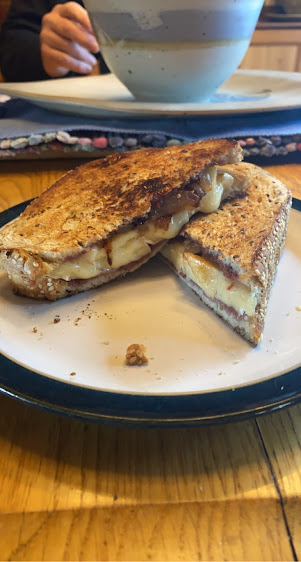

Brie Melt

Description
This recipes is a delightful sandwich. If you are lactose intolerant, close this page now. It involves A LOT of brie.
A brie melt like this is quick, easy, and super tasty. It only requires six ingredients but don't be afraid to change it up by substituting or adding ingredients!
Ingredients
- Brie cheese
- Bread (I used a light rye)
- Butter
- Apple (I used Honey Crisp)
- Sweet onion
- Jam (I used strawberry)
Steps
- To start, slice and sautee your onions in a generous amount of butter.
- While the onion is sauteeing, slice your brie and apple.
- Spread a thin layer of jam on the inside of both slices of bread.
- Assemble the brie, apple slices, and onions onto your sandwich.
- Heavily butter the pan and carefully lay the sandwich in.
- Gently squish down you sandwich to ensure it melts together
- Once the bottom is browned to your liking, carefully flip to brown the other side.
- Enjoy!